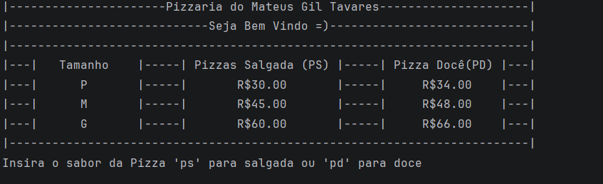
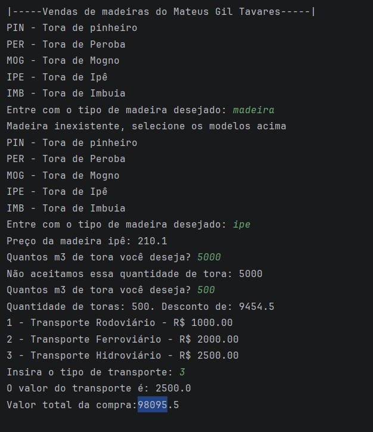

Bem vindo ao meu portfólio
Aqui nesta página do site, vou apresentar alguns códigos que eu já fiz utilizando a linguagem python. Aqui não vai ter muita coisa, pois ainda estou estudando e colocando em práticas os meus projetos pessoais. Mas tenho muita coisa para estudar ainda.
Fotode alguns projetos
Logo em baixo está a foto de alguns projetos que fiz para o trabalho da faculdade, utilizando a linguagem python!

